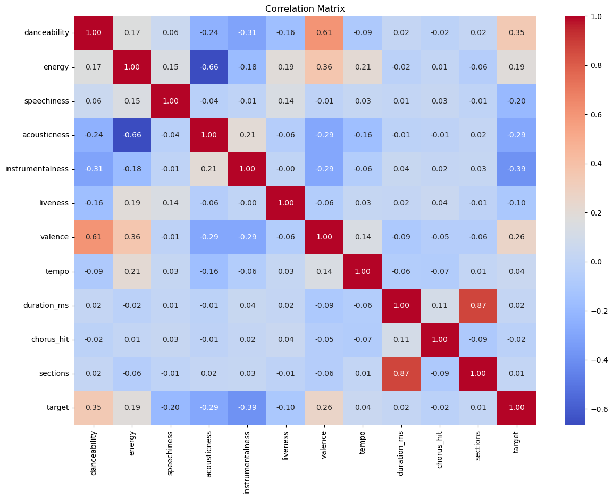
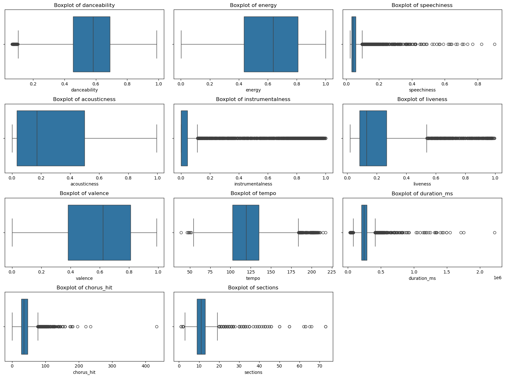
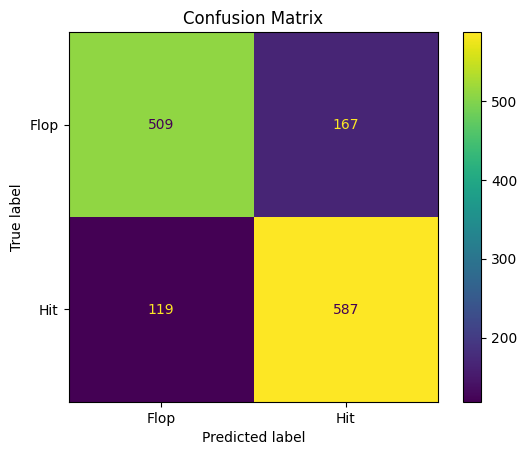
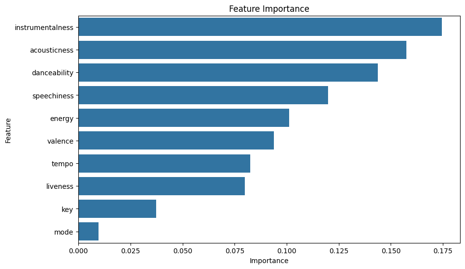
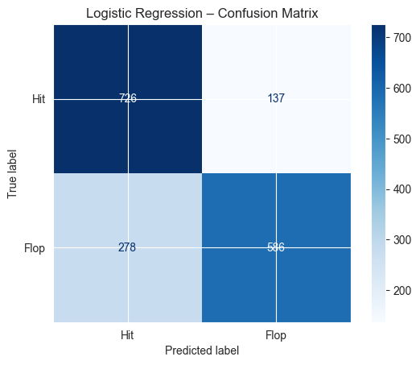

By: Griffin Nixdorf, Unique Davis, Tim Abbott, Brian Cruz, Faith Madukwe, Lavashia Crump
What made a song popular in the 80s? There are many different complex factors, such as artistic values like rhythm, danceability, liveness, and many more, along with consumer behavior trends. Now that streaming platforms like Spotify collect comprehensive data on song characteristics and trends, we can track audio features like tempo, danceability, and energy levels to see if a song will become a hit. Our goal is to analyze these features and make a predictive model to see if a song made in the 80s will become a hit or not.
We are using this dataset: The Spotify Hit Predictor Dataset (1960-2019)
The dataset consists of different tracks from the 60s to 2019. We have decided to look specifically into the 80s for our project. Each song has a target value of 0-1, 0 indicating the song is a flop and 1 indicating the song is a hit. Additionally, each song has several audio features, such as:
| Feature | Description |
|---|---|
| track | Name of the track. |
| artist | Name of the artist. |
| uri | Spotify resource ID for the track. |
| danceability | How suitable the track is for dancing (0.0–1.0). |
| energy | Intensity and activity level of the track (0.0–1.0). |
| key | Musical key of the track (e.g., 0 = C, 1 = C♯/D♭). |
| loudness | Average loudness in decibels (dB). |
| mode | 1 = major, 0 = minor. |
| speechiness | Presence of spoken words (0.0–1.0). |
| acousticness | Likelihood of being an acoustic track (0.0–1.0). |
| instrumentalness | Likelihood the track has no vocals (0.0–1.0). |
| liveness | Likelihood the track is live (0.0–1.0). |
| valence | Musical positivity (0.0–1.0). |
| tempo | Tempo in beats per minute (BPM). |
| duration_ms | Duration of the track in milliseconds. |
| time_signature | Estimated time signature (e.g., 4 = 4/4). |
| chorus_hit | Estimated timestamp of chorus start. |
| sections | Number of sections in the track. |
| target | 1 = hit, 0 = flop (based on Billboard Hot-100). |
The 80s song dataset has 6908 unique songs, along with 19 different columns that will allow us to explore trends through different modeling techniques.
Before conducting any analysis, we began by preparing the dataset to ensure consistency and reliability. Our focus was specifically on songs from the 1980s, so we filtered the Spotify Hit Predictor dataset accordingly, resulting in a final set of 6,908 songs. We then checked for missing values and found none, confirming that the dataset was complete. Additionally, we examined the class distribution of our target variable, whether a song was a hit or a flop, and found it to be perfectly balanced, with 3,454 songs in each category. This balance is ideal for training a binary classification model without introducing bias.
To streamline our analysis, we dropped non-predictive columns such as track, artist, and URI, which contain text-based identifiers rather than useful numerical features. Next, we standardized the remaining numerical features using StandardScaler, ensuring that each feature was on the same scale and that no single variable would dominate the model due to differing units or ranges. We also created boxplots for each audio feature to visually inspect distributions and identify any potential outliers or skewness.
In order to better understand relationships between variables, we generated a correlation matrix and examined the strength of each feature's association with the target variable. Finally, we calculated the Variance Inflation Factor (VIF) to check for multicollinearity among features. Most features fell within an acceptable range, although duration_ms and sections showed moderately elevated VIF scores, indicating some correlation with other variables. These pre-processing steps provided a solid foundation for further exploration and model development by ensuring that the data was clean, well-structured, and ready for analysis.
 We are approaching the problem as a binary classification task (Hit vs. Flop) using one of two supervised learning models:
In addition, we’ll perform feature importance analysis (using permutation importance or model-specific methods) to determine which features contribute most to a song’s popularity. This could be insightful for understanding musical trends and knowing which features will be most useful to include in our model.
Our evaluation will focus on measuring the performance of our classification models in predicting whether a song is a “hit” or a “flop” based on its audio features. We will use the following classification metrics to evaluate our models:
A confusion matrix will be used to visualize model performance across all of the prediction categories.
  Not done yet.
This project can help influence artists, producers, and labels to approach music with data-driven insights. If artists start using our model to predict what makes a song a hit, they might focus more on those traits and create more songs that are likely to become hits. Our project shows how patterns in music can be found using data science, bridging the gap between music and technology in a meaningful way.
But there’s a downside. If artists, producers, or labels start following the same patterns just to make hit songs, music could lose originality and start to sound the same. Artists who want to do something different might be pushed aside or have fewer opportunities. They might even feel pressured to tailor their work to what the algorithm prefers—especially if labels care more about profit than creativity.
Over time, listeners could end up hearing the same kinds of songs again and again, making music less diverse. People might be less exposed to different sounds, genres, and cultures. Also, since our model is trained on data from the 1980s, it might carry bias from that time, favoring mainstream genres and overlooking newer or more diverse styles of music. This bias could limit what gets produced and promoted, shaping the future of music in a way that’s less inclusive and less innovative.
The full code is available below: